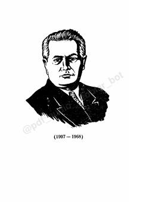

SAbdulla Qahhorning o'tkir tili va chuqur hayotiy ma'noli mashhur qissasi.
Abdulla Qahhorning ushbu mashhur qissasi o'zbek qishlog'idagi hayot, o'zgarishlar va insoniy munosabatlarni ochib beradi. Asar bosh qahramoni Saida va tuman rahbarlari o'rtasidagi voqealar orqali davr ruhiyati yorqin tasvirlangan.